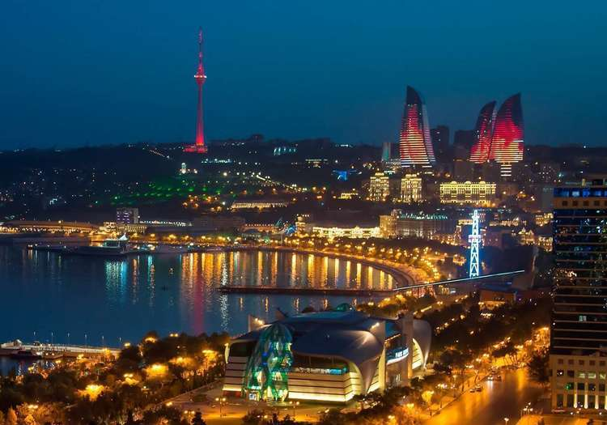
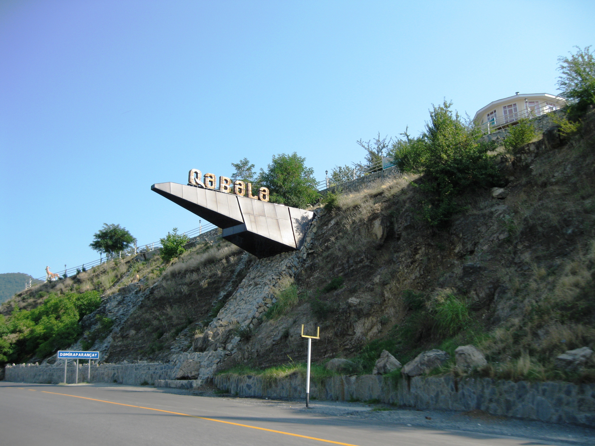

Baki
Bakü, Azerbaycan'ın, Hazar Denizi'nin batı kıyısında yer alan başkentidir. Kafkasya’nın en büyük şehri, en önemli kültür ve ticaret merkezidir. Ülkenin en doğusundaki ve en önemli sanayi, ticaret ve kültür merkezi olmanın yanı sıra bir liman kenti olarak da önemlidir.

Ismayilli
İsmayıllı Rayonu Büyük Kafkas Dağları bölgesine aittir. Kısmen ormanlarla kaplıdır.

Qabala
1930 yılında kurulmuştur. İlk adı Kutkaşen Rayonu (Lezgice: Кьвепеле район) idi. Adı, 1991 yılında Gebele Rayonu olarak değiştirilmiştir.